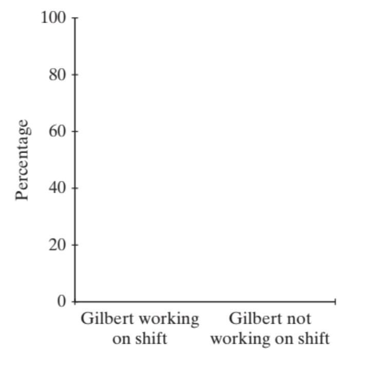

6-1 : Comparing two groups: Categorical response
MAT 2100: Introduction to Statistics
Grace College
Last updated September 24, 2024
The Jesus Creed
Hear, O Israel: The Lord our God, the Lord is one.
Love the Lord your God with all your heart and with all
your soul and with all your mind and with all your strength.
The second is this: Love your neighbor as yourself.
Murderous nurse?
For several years in the 1990s, Kristen Gilbert worked as a nurse in the intensive care unit (ICU) of the Veterans Administration Hospital in Northampton, Massachusetts. Over the course of her time there, other nurses came to suspect that she was killing patients by injecting them with the heart stimulant epinephrine. Gilbert was eventually arrested and charged with these murders. Part of the evidence presented against Gilbert at her murder trial was a statistical analysis of 1,641 eight-hour shifts during the time Gilbert worked in the ICU. For each of these shifts, researchers recorded two variables: whether Gilbert worked on the shift and whether at least one patient died during the shift.
Exercise 1
Identify the observational units in this study. (Hint: The observational units are not people. Think about what the sample size is.)
Exercise 2
Classify each variable as categorical or quantitative: whether Gilbert worked on the shift and whether at least one patient died during the shift.
Exercise 3
Which variable would you regard as explanatory and which as response?
Exercise 4
Is this an observational study or an experiment? Justify your answer.
So what did the researchers find when they analyzed the 1,641 eight-hour shifts? They found that Gilbert worked on 257 of the shifts, and she did not work on 1,384 of them. They also found that a patient died during 74 of the shifts, and no deaths occurred on the other 1,567 shifts.
Exercise 5
Explain why the information in the previous paragraph does not provide any clues about whether there is an association between Gilbert working on a shift and a patient dying during the shift. What additional information do you need to know?
Here is some additional information: Among the 74 shifts during which a patient died, 40 were shifts on which Gilbert worked and 34 were shifts on which Gilbert did not work.
Exercise 6
Explain why simply comparing only the numbers 40 and 34 is not very informative.
When analyzing data on two categorical variables, a useful first step is to organize the data into a two-way table of counts. In this case both variables have only two categories, so we produce a \(2 \times 2\) table.
Exercise 7
Fill in the missing counts in the two-way table. (Hint: Start by entering 40 and 34 into the appropriate cells. Then make sure that both rows and both columns add up to the indicated totals.)
Table 1:
| Gilbert working on shift | Gilbert not working on shift | Total | |
| Patient died during shift | 74 | ||
| No patient died during shift | 1,567 | ||
| Total | 257 | 1,384 | 1,641 |
Exercise 8
Suggest a better way to compare the outcomes of the shifts on which Gilbert worked and the shifts on which she did not work than simply comparing 40 to 34. Explain why your answer is more informative.
A next step in analyzing categorical data in a two-way table is to calculate conditional proportions. A conditional proportion simply means that you consider the counts in only one category of the explanatory variable at a time.
Exercise 9
Now let’s calculate the conditional proportions.
Exercise 9a:
Calculate the conditional proportion of Gilbert shifts on which a patient died. (Hint: Put the total number of Gilbert shifts in the denominator of your fraction.)
Exercise 9b:
Calculate the conditional proportion of non-Gilbert shifts on which a patient died.
A segmented bar graph is an appropriate display for graphing data in a two-way table. Such a graph contains rectangles of total height 100% for each category of the explanatory variable. Then segments divide up each rectangle according to the conditional proportions of the response variable categories. A mosaic plot also makes the widths of the rectangles proportional to the sizes of the categories.
Exercise 10
Fill in a segmented bar graph or mosaic plot to display the data from this study. First draw two (separated) rectangles, one for Gilbert shifts and one for non-Gilbert shifts, each with total height 100%. For the mosaic plot, first determine the proportion of shifts with Gilbert working. Then make the width of that rectangle smaller and the width of the Gilbert not working rectangle larger, to match those proportions. Then draw a line in each rectangle corresponding to the conditional proportion of shifts in which a patient died, as you calculated in #9.

Exercise 11
Do the conditional proportions and graph appear to provide evidence that at least one patient was more likely to die on a Gilbert shift than on a non-Gilbert shift? In other words, does there appear to be a tendency for Gilbert shifts to have at least one death more often than non-Gilbert shifts? Explain.
Exercise 12
Without doing any further analysis, do you consider the difference between the conditional proportions to be striking, worth reporting to a jury?
A next step is to produce a single number (statistic) to summarize the data.
Exercise 13
What arithmetic operation might you perform on the two conditional proportions to obtain a single statistic?
Exercise 14
Calculate the difference in conditional proportions of death between Gilbert and non-Gilbert shifts. Does the value of this difference strike you as noteworthy?
Exercise 15
Now calculate a different statistic: the ratio of conditional proportions of death between Gilbert and non-Gilbert shifts. This ratio is called a relative risk. Write a sentence interpreting this ratio value, as the prosecution might present to a jury. Does the value of this ratio strike you as noteworthy?
Definition 2:
Definition ():
Relative risk is the ratio of two conditional proportions. It indicates how many times greater the risk of an outcome is for one group compared to another.
Exercise 16
Even if the difference between these conditional proportions of death is found to be highly statistically significant, can we absolutely conclude from this analysis that Kristen Gilbert was responsible for (i.e., caused) the increased chance of death on her shifts? Explain your answer. (Hint: Remember your answer to question 4 about what kind of study this is.)
Exercise 17
Suggest an alternative explanation that the defense attorneys might use to explain the large difference in death proportions between the two groups.